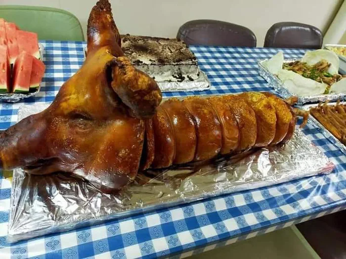

HELLO MGA KAKUSINA!!
Welcome sa aking cooking tutorial
- Adobo
- Lechon
ADOBO

Ingredients:
- 2 tsp oil, canola
- 6 cloves garlic, crushed
- 1 pc onion, sliced
- 750 g chicken cut ups
- 250 g pork liempo cut into 1-inch pieces
- 3 tbsp vinegar
- ¼ cup soy sauce
- 2 pcs bay leaves
- 1 tsp whole black peppercorns, slightly crushed
- 1 cup water
- 1 pc Knorr chicken cube
- 1 tsp brown sugar, packed
Start by marinating the chicken in soy sauce and garlic. The garlic needs to be crushed for best results. This process takes 1 hour to 12 hours depending on how flavorful you want the dish to be. Sometimes marinating for an hour is not enough. I think that 3 hours is optimal. The chicken absorbs most of the flavors from the soy sauce and garlic during this step. It is noticeable when you taste the dish after cooking. Note that it is also possible to include the vinegar in this step.
Go BackMENUDO

Ingredients:
- 1/4 cup cooking oil
- 2 pcs potatoes, medium sized, cut in cubes
- 1 pc carrot, medium sized, cut in cubes
- 6 cloves garlic, minced
- 1 pc onion, minced
- 250 grams pork kasim, cut into small cubes
- 250 grams pork liempo, cut into small cubes
- 1 1/2 cups water
This pork menudo recipe requires the meat to be marinated in soy sauce and lemon first before cooking. Combine the pork, soy sauce and lemon in a bowl. Mix well and let it stay for at least 1 hour. It will be better to store the bowl inside the refrigerator while you marinate to avoid contamination. Make sure to cover the bowl before doing this. Take the pork out of the fridge 15 minutes before cooking. Start to saute the garlic and onion. You will notice that this method is common in Filipino cuisine. Most Filipino foods are cooked starting with sauteing garlic and onion.
Go BackLECHON
Ingredients:
- 20 Servings
- 1 whole pig (20 kg) (44 lb)
- 10-20 bundles of lemongrass
- 15 bay leaves
- 1 kg (2.2 lb) onion
- 2-3 cups (550-820g) salt and pepper
- GLAZE
- 1 tsp whole black peppercorns, slightly crushed
- evaporated milk
Most recipes suggest cooking lechon over hot coals, although in some regions it is done over an open flame. The trick is to roast the lechon slowly, so all the juices remain inside, the meat becomes tender and thoroughly cooked, and the skin turns crisp. Depending on the size of the pig, roasting can take from 5 to up to 8 hours and is done by constantly rotating the skewer.
Go Back